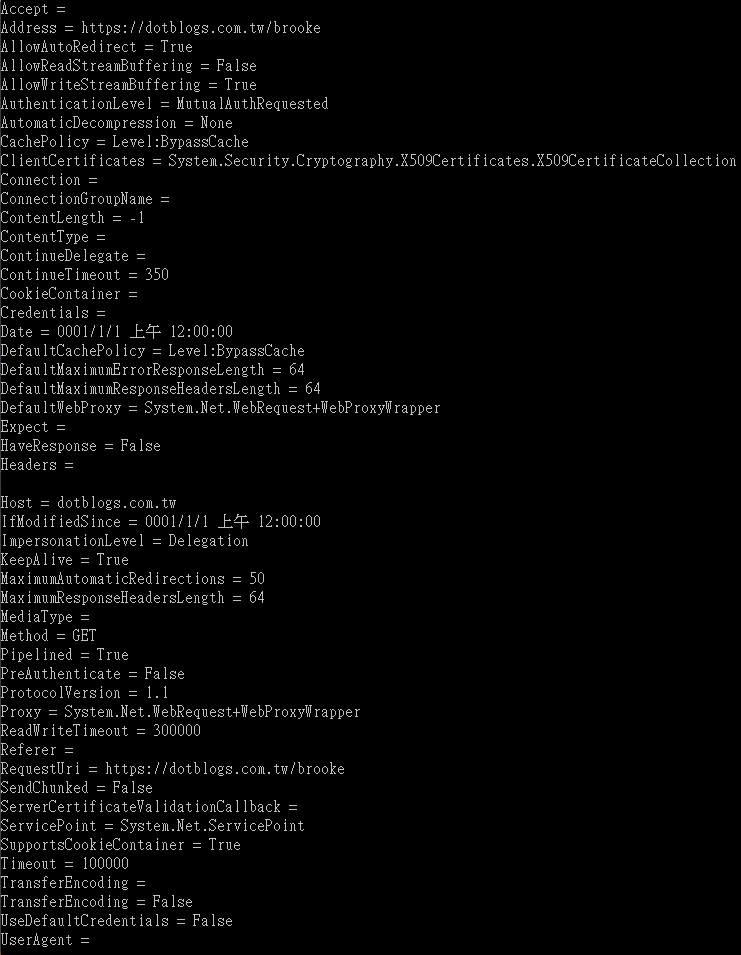

HttpWebRequest的屬性為
| 名稱 | 描述 |
| Accept | Gets or sets the value of the Accept HTTP header. |
| Address | 取得實際回應要求的網際網路資源統一資源識別元 (URI)。 |
| AllowAutoRedirect | Gets or sets a value that indicates whether the request should follow redirection responses. |
| AllowReadStreamBuffering | 取得或設定值，這個值表示是否要緩衝處理從網際網路資源接收的資料。 |
| AllowWriteStreamBuffering | 取得或設定值，指出是否要緩衝傳送至網際網路資源的資料。 |
| AuthenticationLevel | 取得或設定值，指出用於這個要求的驗證和模擬等級。(繼承自 WebRequest。) |
| AutomaticDecompression | 取得或設定使用的解壓縮類型。 |
| CachePolicy | 取得或設定這個要求的快取原則。(繼承自 WebRequest。) |
| ClientCertificates | 取得或設定與這個要求關聯的安全憑證集合。 |
| Connection | 取得或設定 Connection HTTP 標頭的值。 |
| ConnectionGroupName | Gets or sets the name of the connection group for the request.(覆寫WebRequest.ConnectionGroupName。) |
| ContentLength | Gets or sets the Content-length HTTP header.(覆寫 WebRequest.ContentLength。) |
| ContentType | 取得或設定 Content-type HTTP 標頭的值。(覆寫 WebRequest.ContentType。) |
| ContinueDelegate | Gets or sets the delegate method called when an HTTP 100-continue response is received from the Internet resource. |
| ContinueTimeout | 取得或設定要在收到伺服器的 100-Continue 以前等候的逾時 (以毫秒為單位)。 |
| CookieContainer | 取得或設定與要求相關的 Cookie。 |
| CreatorInstance | 過時。 在子代類別中覆寫時，取得衍生自 IWebRequestCreate 類別的 Factory 物件，用來建立執行個體化的 WebRequest 以對指定的 URI 提出要求。(繼承自 WebRequest。) |
| Credentials | 取得或設定要求的驗證資訊。(覆寫 WebRequest.Credentials。) |
| Date | 取得或設定要用於 HTTP 要求中的 Date HTTP 標頭值。 |
| DefaultCachePolicy | 取得或設定這個要求的預設快取原則。 |
| DefaultMaximumErrorResponseLength | Gets or sets the default maximum length of an HTTP error response. |
| DefaultMaximumResponseHeadersLength | Gets or sets the default for the MaximumResponseHeadersLength property. |
| Expect | 取得或設定 Expect HTTP 標頭的值。 |
| HaveResponse | Gets a value that indicates whether a response has been received from an Internet resource. |
| Headers | Specifies a collection of the name/value pairs that make up the HTTP headers.(覆寫WebRequest.Headers。) |
| Host | 取得或設定 Host 標頭值，此標頭可用於獨立於要求 URI 的 HTTP 要求中。 |
| IfModifiedSince | Gets or sets the value of the If-Modified-Since HTTP header. |
| ImpersonationLevel | 取得或設定目前要求的模擬等級。(繼承自 WebRequest。) |
| KeepAlive | Gets or sets a value that indicates whether to make a persistent connection to the Internet resource. |
| MaximumAutomaticRedirections | 取得或設定要求追蹤的最大重新導向數目。 |
| MaximumResponseHeadersLength | Gets or sets the maximum allowed length of the response headers. |
| MediaType | 取得或設定要求的媒體類型。 |
| Method | 取得或設定要求的方法。(覆寫 WebRequest.Method。) |
| Pipelined | 取得或設定值，指出是否將要求導送至網際網路資源。 |
| PreAuthenticate | Gets or sets a value that indicates whether to send an Authorization header with the request.(覆寫 WebRequest.PreAuthenticate。) |
| ProtocolVersion | 取得或設定要求所使用的 HTTP 版本。 |
| Proxy | 取得或設定要求的 Proxy 資訊。(覆寫 WebRequest.Proxy。) |
| ReadWriteTimeout | 取得或設定寫入或讀取資料流時的逾時 (以毫秒為單位)。 |
| Referer | Gets or sets the value of the Referer HTTP header. |
| RequestUri | 取得要求的原始統一資源識別元 (URI)。(覆寫 WebRequest.RequestUri。) |
| SendChunked | 取得或設定值，指出是否要分區段傳送資料至網際網路資源。 |
| ServerCertificateValidationCallback | 取得或設定用來驗證伺服器憑證的回呼函式。 |
| ServicePoint | 取得要求所使用的服務點。 |
| SupportsCookieContainer | Gets a value that indicates whether the request provides support for a CookieContainer. |
| Timeout | 取得或設定 GetResponse 和 GetRequestStream 方法的逾時值 (以毫秒為單位)。(覆寫WebRequest.Timeout。) |
| TransferEncoding | Gets or sets the value of the Transfer-encoding HTTP header. |
| UnsafeAuthenticatedConnectionSharing | 取得或設定值，指出是否允許高速 NTLM 驗證連接共用。 |
| UseDefaultCredentials | 取得或設定 Boolean 值，控制是否隨著要求傳送預設認證。(覆寫WebRequest.UseDefaultCredentials。) |
| UserAgent | 取得或設定 User-agent HTTP 標頭的值。 |
實際範例展示
using System;
using System.Collections.Generic;
using System.Linq;
using System.Text;
using System.Threading.Tasks;
using System.Net;
namespace ConsoleApplication1
{
class Program
{
static void Main(string[] args)
{
HttpWebRequest HttpWebRequest = HttpWebRequest.CreateHttp("https://dotblogs.com.tw/brooke");
Console.WriteLine("Accept = " + HttpWebRequest.Accept);
Console.WriteLine("Address = " + HttpWebRequest.Address);
Console.WriteLine("AllowAutoRedirect = " + HttpWebRequest.AllowAutoRedirect);
Console.WriteLine("AllowReadStreamBuffering = " + HttpWebRequest.AllowReadStreamBuffering);
Console.WriteLine("AllowWriteStreamBuffering = " + HttpWebRequest.AllowWriteStreamBuffering);
Console.WriteLine("AuthenticationLevel = " + HttpWebRequest.AuthenticationLevel);
Console.WriteLine("AutomaticDecompression = " + HttpWebRequest.AutomaticDecompression);
Console.WriteLine("CachePolicy = " + HttpWebRequest.CachePolicy);
Console.WriteLine("ClientCertificates = " + HttpWebRequest.ClientCertificates);
Console.WriteLine("Connection = " + HttpWebRequest.Connection);
Console.WriteLine("ConnectionGroupName = " + HttpWebRequest.ConnectionGroupName);
Console.WriteLine("ContentLength = " + HttpWebRequest.ContentLength);
Console.WriteLine("ContentType = " + HttpWebRequest.ContentType);
Console.WriteLine("ContinueDelegate = " + HttpWebRequest.ContinueDelegate);
Console.WriteLine("ContinueTimeout = " + HttpWebRequest.ContinueTimeout);
Console.WriteLine("CookieContainer = " + HttpWebRequest.CookieContainer);
Console.WriteLine("Credentials = " + HttpWebRequest.Credentials);
Console.WriteLine("Date = " + HttpWebRequest.Date);
Console.WriteLine("DefaultCachePolicy = " + HttpWebRequest.DefaultCachePolicy);
Console.WriteLine("DefaultMaximumErrorResponseLength = " + HttpWebRequest.DefaultMaximumErrorResponseLength);
Console.WriteLine("DefaultMaximumResponseHeadersLength = " + HttpWebRequest.DefaultMaximumResponseHeadersLength);
Console.WriteLine("DefaultWebProxy = " + HttpWebRequest.DefaultWebProxy);
Console.WriteLine("Expect = " + HttpWebRequest.Expect);
Console.WriteLine("HaveResponse = " + HttpWebRequest.HaveResponse);
Console.WriteLine("Headers = " + HttpWebRequest.Headers);
Console.WriteLine("Host = " + HttpWebRequest.Host);
Console.WriteLine("IfModifiedSince = " + HttpWebRequest.IfModifiedSince);
Console.WriteLine("ImpersonationLevel = " + HttpWebRequest.ImpersonationLevel);
Console.WriteLine("KeepAlive = " + HttpWebRequest.KeepAlive);
Console.WriteLine("MaximumAutomaticRedirections = " + HttpWebRequest.MaximumAutomaticRedirections);
Console.WriteLine("MaximumResponseHeadersLength = " + HttpWebRequest.MaximumResponseHeadersLength);
Console.WriteLine("MediaType = " + HttpWebRequest.MediaType);
Console.WriteLine("Method = " + HttpWebRequest.Method);
Console.WriteLine("Pipelined = " + HttpWebRequest.Pipelined);
Console.WriteLine("PreAuthenticate = " + HttpWebRequest.PreAuthenticate);
Console.WriteLine("ProtocolVersion = " + HttpWebRequest.ProtocolVersion);
Console.WriteLine("Proxy = " + HttpWebRequest.Proxy);
Console.WriteLine("ReadWriteTimeout = " + HttpWebRequest.ReadWriteTimeout);
Console.WriteLine("Referer = " + HttpWebRequest.Referer);
Console.WriteLine("RequestUri = " + HttpWebRequest.RequestUri);
Console.WriteLine("SendChunked = " + HttpWebRequest.SendChunked);
Console.WriteLine("ServerCertificateValidationCallback = " + HttpWebRequest.ServerCertificateValidationCallback);
Console.WriteLine("ServicePoint = " + HttpWebRequest.ServicePoint);
Console.WriteLine("SupportsCookieContainer = " + HttpWebRequest.SupportsCookieContainer);
Console.WriteLine("Timeout = " + HttpWebRequest.Timeout);
Console.WriteLine("TransferEncoding = " + HttpWebRequest.TransferEncoding);
Console.WriteLine("TransferEncoding = " + HttpWebRequest.UnsafeAuthenticatedConnectionSharing);
Console.WriteLine("UseDefaultCredentials = " + HttpWebRequest.UseDefaultCredentials);
Console.WriteLine("UserAgent = " + HttpWebRequest.UserAgent);
Console.ReadKey();
}
}
}

參考資料：